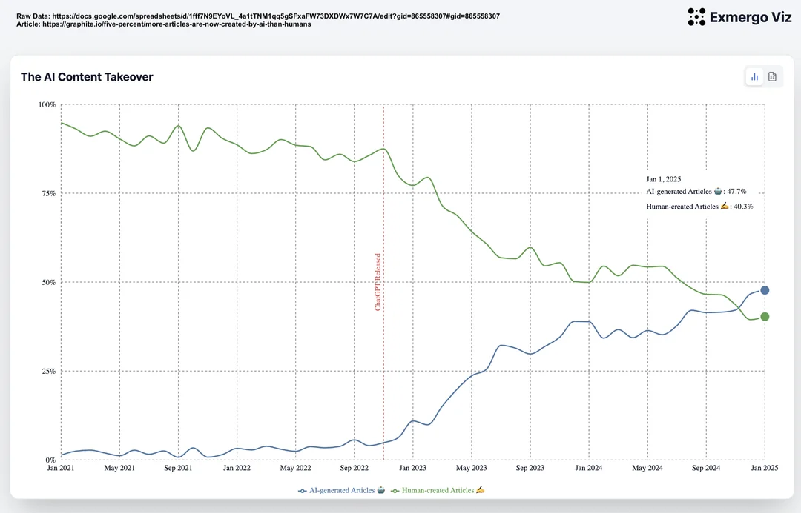

AI Articles Overtook Human Articles. That Is Not Automatically Bad
More AI generated articles than human written articles is not automatically a decline. It can be a transition in media production, similar to printing press replacing manual copying and photography replacing painting for documentation.
What the Reddit chart claims
A post on r/dataisbeautiful presents a crossover point where AI generated articles overtake human written articles. The exact dataset details need scrutiny, but the high level signal is clear enough to discuss. Cheap content generation is scaling faster than manual writing output.
That pattern is unsurprising. When production cost drops by orders of magnitude, volume usually explodes. The same thing happened when printing moved reproduction from skilled scribes to press operators. The same thing happened when cameras made visual capture fast and repeatable.
Why volume growth is not the core problem
A larger supply of text does not force lower quality consumption. Distribution systems decide what people see. Ranking models, recommendation systems, editorial choices, and user habits decide which items get attention. The bottleneck moved from production to filtering.
In that environment, the right question is not whether AI text exists. The right question is whether readers can quickly identify what is useful, original, and trustworthy. If curation improves, higher volume can increase discovery. If curation fails, noise wins.
How this connects to zero-directionality
This framing aligns with our preprint, “Either Companionship or Death: Zero-Directionality and the Structural Disappearance of the Social Other” (https://www.preprints.org/manuscript/202603.0382). The core claim is that many digital interactions have crossed into zero-directionality. In these interactions, the social other is absent and the machine becomes the communicative counterpart.
Seen through that lens, the AI article crossover is not only a content story. It is a structural story about who is in the loop. When drafting, ranking, and recommendation shift toward human-machine loops without enough human mediation, the risk is substitution. When AI helps humans evaluate, compare, and connect with other humans, the result can be companionship rather than displacement.

A better frame for the next year
The historical analogy is practical. Printing did not kill books. It multiplied access and shifted value toward selection, editing, and distribution. Photography did not kill art. It changed what painting was for. AI writing is likely to do the same. Routine drafting and templated explainers become cheaper. Human judgment, synthesis, and social accountability become more valuable.
So I would not argue that overtaking is bad by default. I would argue that institutions and creators need better quality signals. Provenance labels, source transparency, reputation systems, and stronger editorial standards matter more now than before.
What would change my mind
The strongest counterargument is not philosophical. It is empirical. If we observe that domains with high AI article penetration show lower factual accuracy, lower source diversity, and lower reader trust over time, then the transition is harmful in practice. The same applies if search and social ranking systems consistently reward synthetic repetition over original reporting.
This is measurable. Track correction rates, citation quality, source overlap, and time to find a reliable answer. Compare domains with different AI adoption levels. If those metrics degrade and stay degraded, abundance is hurting knowledge ecosystems. If they improve, abundance is likely helping people find and learn faster.
That is why panic is not a strategy. Instrumentation is. The important work now is to define quality metrics, publish them openly, and hold platforms accountable for them.
Takeaway
When machine output surpasses human output, panic is understandable. Better filtering is the real leverage point. Build that, and abundance becomes useful instead of overwhelming.